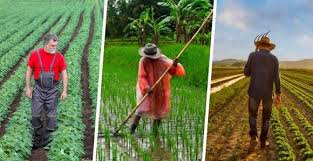

Agricultura é a prática de cultivar plantas e criar gado. Foi o principal desenvolvimento na ascensão da civilização humana sedentária, por meio da qual o uso de espécies domesticadas criou excedentes de alimentos que permitiram às pessoas viver nas cidades. A história da agricultura começou há milhares de anos.
